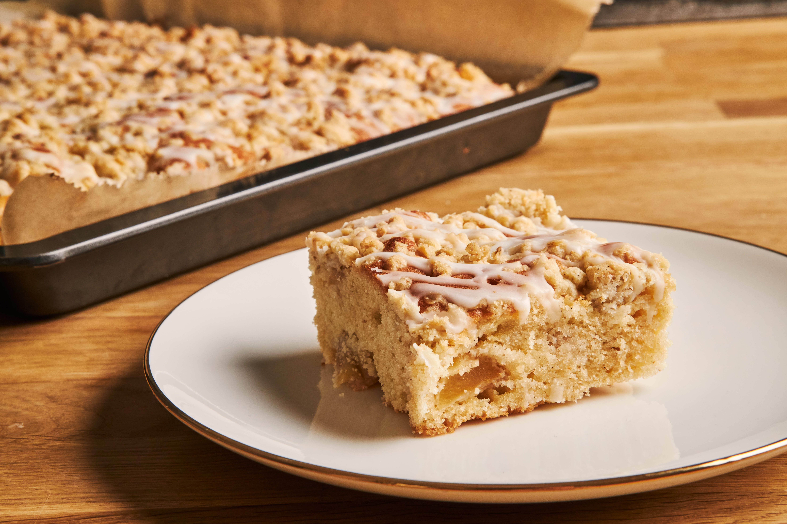

Apple Crumble Coffee Cake Recipe

Description
Ingredients
Dry Ingredients:
- 2 cups all-purpose flour
- 1 teaspoon baking powder
- 3/4 teaspoon baking soda
- 1/2 teaspoon fine sea salt
Crumble Mixture:
- 1 1/2 cups finely chopped toasted walnuts (optional)
- 1/3 cup packed light brown sugar
- 3 teaspoons unsalted butter, melted
- 1 teaspoon ground cinnamon
- 1/4 teaspoon salt
Wet Ingredients
- 1 cup white sugar
- 1/2 cup unsalted butter, at room temperature
- 1 cup plain yogurt
- 1 1/2 teaspoons vanilla extract
- 2 Honeycrisp apples
Directions
- Gather all Ingredients
- Preheat oven to 350 degrees and butter 9x12 inch baking dish with 2 teaspoons of butter
- Whisk dry ingredients then set aside
- Combine crumble mixure until walnuts and sugars are thoroughly coated with butter then set aside
- Beat 1 cup white sugar and 1/2 cup better until well blended
- Whisk in 1 egg into the mixture until smooth
- Whisk in second egg until thoroughly incorporated and add yogurt and vanilla
- Add dry ingredients and whisk until flour disappears (Do not overmix)
- Remove cores from apples, cut into 1/8 to 1/4 inch slices, stack a few slices and then cut down the center, lengthwise, and then dice crosswise into cubes
- Fold apples into batter until just combined
- Spread 1/2 of the batter into baking dish and then spread 1/2 of the crumble mixture ontop
- Dollop remaining batter and spread carefully to evenly distribute
- top with remaining crumble
- Bake in the center of preheated oven for about 40 minutes until tooth pick inserted into the center comes out clean
- Cool for about 30 minutes before slicing